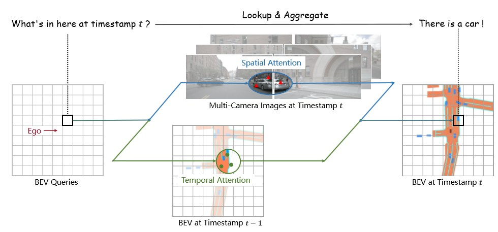
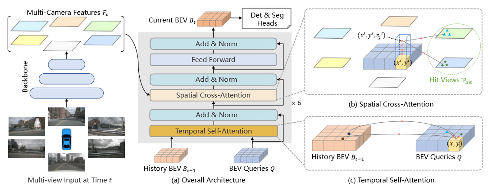
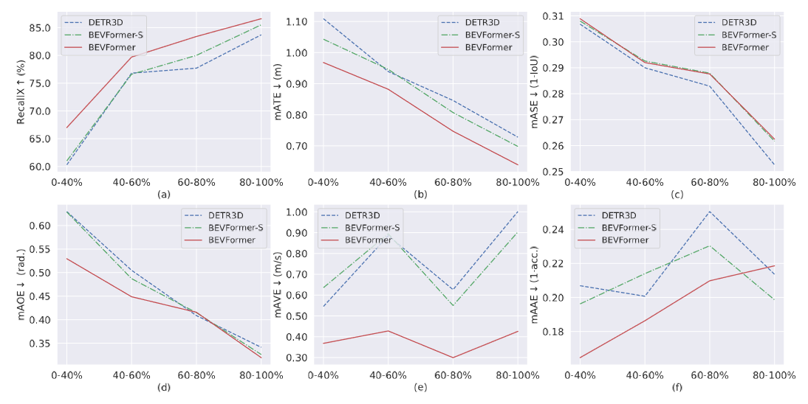
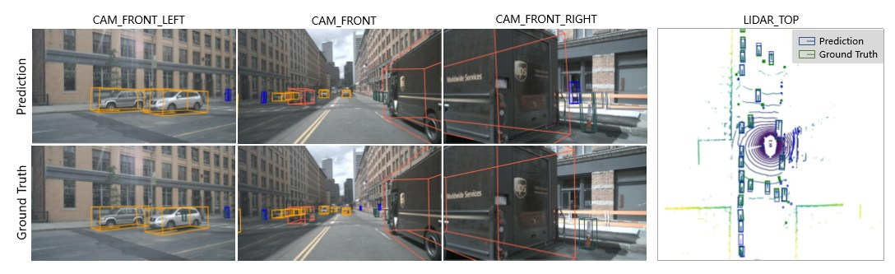
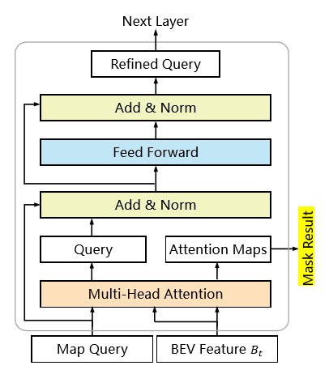
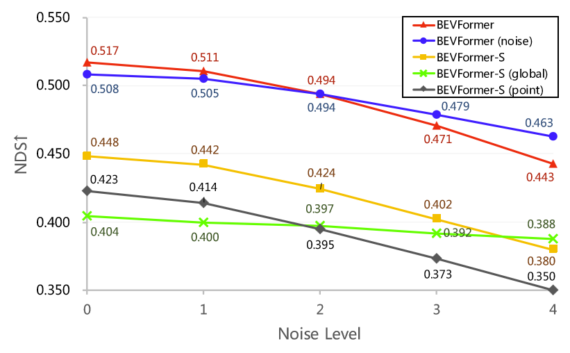
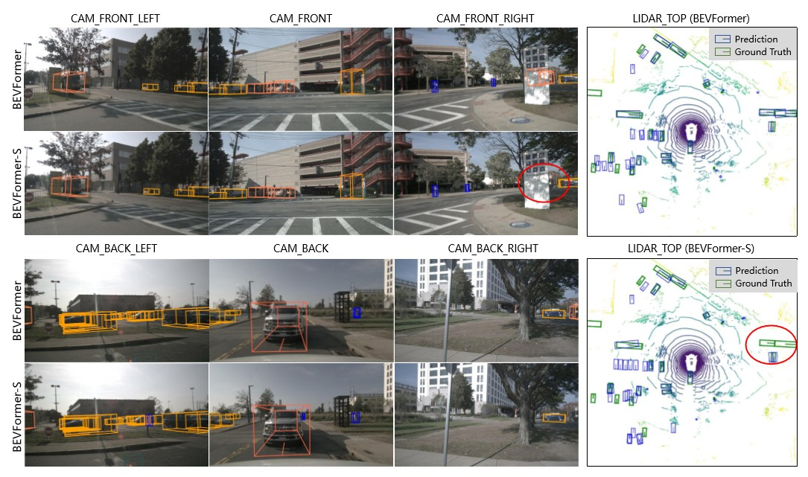
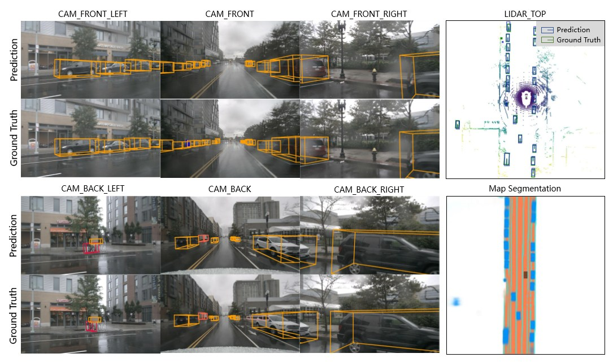
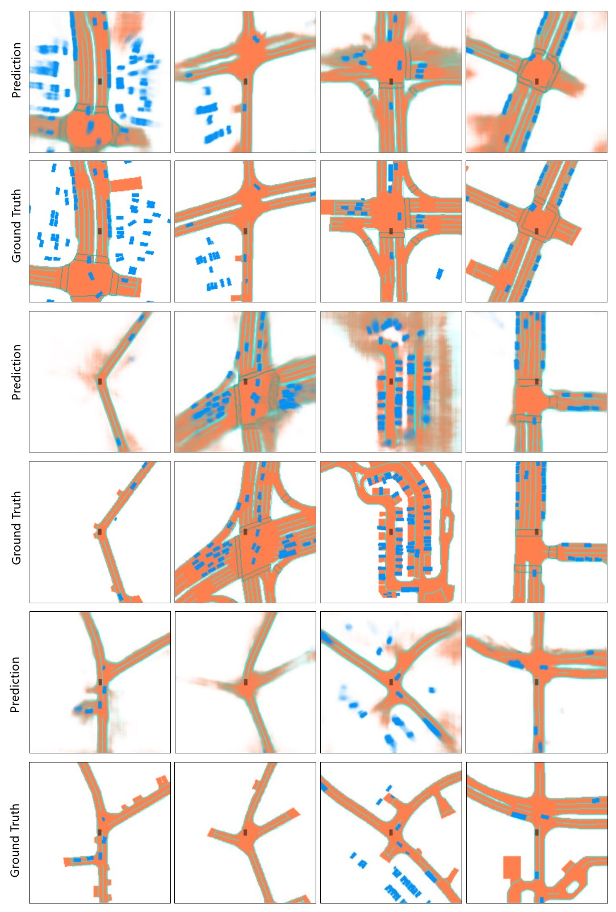

Zhiqi Li1,2*、Wenhai Wang2*、Hongyang Li2*、Enze Xie3、Chonghao Sima2、Tong Lu1、Yu Qiao2、Jifeng Dai2✉
1Nanjing University 2Shanghai AI Laboratory 3The University of Hong Kong
arXiv:2203.17270v2 [cs.CV]、2022年7月13日
翻訳について：原文 PDF は
07_BEVFormer_2203.17270.pdf（全 20 ページ）。本文、図の説明、図中ラベル、表、脚注、付録を訳出し、論文タイトルと参考文献は原文のまま掲載。図は原図を掲載し、英語ラベルの日本語訳を併記した。数式・数値・引用番号・コードの識別子は原文を維持。原文の記述に関する補足は「訳注」と明示し、本文と区別している。

図1：我々は BEVFormer を提案する。これは、Transformer と時間的構造の両方を適用して多カメラ入力から鳥瞰図（BEV）特徴を生成する、自動運転のためのパラダイムである。BEVFormer はクエリを用いて空間／時間空間を参照（lookup）し、それに応じて時空間情報を集約するため、知覚タスクに対してより強力な表現が得られる。
図中ラベル：What's in here at timestamp \(t\) ?＝時刻 \(t\) においてここに何があるか？、Lookup & Aggregate＝参照と集約、There is a car !＝車がある！、Spatial Attention＝空間注意、Multi-Camera Images at Timestamp \(t\)＝時刻 \(t\) の多カメラ画像、Temporal Attention＝時間注意、BEV Queries＝BEV クエリ、Ego＝自車、BEV at Timestamp \(t-1\)＝時刻 \(t-1\) の BEV、BEV at Timestamp \(t\)＝時刻 \(t\) の BEV
多カメラ画像に基づく 3D 検出や地図セグメンテーションを含む 3D 視覚知覚タスクは、自動運転システムにとって不可欠である。本研究では、BEVFormer と呼ぶ新しいフレームワークを提示する。これは時空間 Transformer によって統一的な BEV 表現を学習し、複数の自動運転知覚タスクを支える。要するに、BEVFormer は、あらかじめ定義されたグリッド状の BEV クエリを通じて空間および時間の空間と相互作用することにより、空間情報と時間情報の両方を活用する。空間情報を集約するために、各 BEV クエリがカメラ視点をまたぐ関心領域から空間特徴を抽出する空間クロス注意（spatial cross-attention）を設計する。時間情報については、過去の BEV 情報を再帰的に融合する時間自己注意（temporal self-attention）を提案する。我々の手法は nuScenes の test セットにおいて NDS 指標で 56.9% という新たな最高性能（state-of-the-art）を達成した。これは従来の最良手法より 9.0 ポイント高く、LiDAR ベースのベースラインの性能に匹敵する。さらに、BEVFormer が速度推定の精度と低視認性条件下での物体の再現率を著しく改善することを示す。コードは https://github.com/zhiqi-li/BEVFormer で公開している。
脚注*：同等の貢献。本研究は Zhiqi Li が Shanghai AI Lab のインターンであった際に行われた。
脚注✉：責任著者。
3D 空間における知覚は、自動運転やロボティクスなど、さまざまな応用にとって極めて重要である。LiDAR ベースの手法［43, 20, 54, 50, 8］の目覚ましい進展にもかかわらず、カメラベースの手法［45, 32, 47, 30］が近年大きな注目を集めている。導入コストの低さに加えて、カメラには、LiDAR ベースの手法と比べて、遠距離の物体を検出でき、視覚に基づく道路要素（例えば、信号機、停止線）を識別できるという望ましい利点がある。
自動運転における周囲シーンの視覚知覚は、複数のカメラから得られる 2D の手がかりから 3D バウンディングボックスや意味地図（semantic map）を予測することが期待される。最も素直な解決策は、単眼フレームワーク［45, 44, 31, 35, 3］とカメラ間の後処理に基づくものである。このフレームワークの欠点は、異なる視点を個別に処理するためカメラをまたぐ情報を捉えられず、性能と効率が低くなることである［32, 47］。
単眼フレームワークの代替として、より統一的なフレームワークは、多カメラ画像から全体的な表現を抽出するものである。鳥瞰図（BEV）は、物体の位置とスケールを明確に表し、知覚や計画など様々な自動運転タスクに適しているため、周囲シーンの表現として広く用いられている［29］。これまでの地図セグメンテーション手法は BEV の有効性を示している［32, 18, 29］が、3D 物体検出においては、BEV ベースの手法は他のパラダイムに対して顕著な優位性を示していない［47, 31, 34］。その根本的な理由は、3D 物体検出タスクでは正確な 3D バウンディングボックス予測を支える強力な BEV 特徴が必要である一方で、2D 平面から BEV を生成することは不良設定問題であることにある。BEV 特徴を生成する一般的な BEV フレームワークは深度情報に基づいている［46, 32, 34］が、このパラダイムは深度値や深度分布の精度に敏感である。そのため、BEV ベースの手法の検出性能は誤差の累積の影響を受け［47］、不正確な BEV 特徴は最終的な性能を大きく損ないうる。したがって、我々は、深度情報に依存せず、3D 事前知識に厳密に依存するのではなく適応的に BEV 特徴を学習できる BEV 生成手法を設計することを動機とする。注意機構を用いて有用な特徴を動的に集約する Transformer は、概念的に我々の要求を満たしている。
BEV 特徴を用いて知覚タスクを行うもう一つの動機は、BEV が時間と空間をつなぐ望ましい橋渡しとなる点である。人間の視覚知覚システムにおいて、時間情報は物体の運動状態を推定したり遮蔽された物体を識別したりする上で重要な役割を果たしており、視覚分野の多くの研究が動画データを用いることの有効性を示してきた［2, 27, 26, 33, 19］。しかし、既存の最先端の多カメラ 3D 検出手法が時間情報を活用することはほとんどない。大きな課題は、自動運転は時間的制約が厳しく、シーン中の物体が急速に変化するため、異なる時刻の BEV 特徴を単純に積み重ねると余分な計算コストと干渉情報がもたらされ、望ましくない可能性があることである。再帰型ニューラルネットワーク（RNN）［17, 10］に着想を得て、我々は BEV 特徴を用いて過去から現在へ時間情報を再帰的に伝達する。これは RNN モデルの隠れ状態と同じ考え方である。
この目的のため、我々は BEVFormer と呼ぶ Transformer ベースの鳥瞰図（BEV）エンコーダを提示する。これは多視点カメラと過去の BEV 特徴から時空間特徴を効果的に集約できる。BEVFormer から生成される BEV 特徴は、3D 物体検出や地図セグメンテーションなど複数の 3D 知覚タスクを同時に支えることができ、自動運転システムにとって価値がある。図1に示すように、BEVFormer は 3 つの主要な設計を含む。すなわち、(1) 注意機構によって空間特徴と時間特徴を柔軟に融合するグリッド状の BEV クエリ、(2) 多カメラ画像から空間特徴を集約する空間クロス注意モジュール、(3) 過去の BEV 特徴から時間情報を抽出する時間自己注意モジュールであり、(3) は無視できる程度の計算オーバーヘッドで、移動物体の速度推定と強く遮蔽された物体の検出に寄与する。BEVFormer が生成する統一的な特徴により、モデルは Deformable DETR［56］やマスクデコーダ［22］などの異なるタスク固有ヘッドと組み合わせて、エンドツーエンドの 3D 物体検出と地図セグメンテーションを行うことができる。
我々の主な貢献は以下のとおりである。
test セットで 56.9% の NDS を達成し、従来の最良の検出手法 DETR3D［47］を 9.0 ポイント上回る（56.9% 対 47.9%）。地図セグメンテーションタスクでも最高性能を達成し、最も難しい車線セグメンテーションにおいて Lift-Splat［32］より 5.0 ポイント以上高い。この素直で強力なフレームワークが、今後の 3D 知覚タスクの新たなベースラインとなることを期待する。近年、Transformer を用いて検出タスクやセグメンテーションタスクを再定式化することが新しい潮流となっている［7, 56, 22］。
DETR［7］は物体クエリの集合を用いて、クロス注意デコーダによって検出結果を直接生成する。しかし、DETR の主な欠点は学習時間が長いことである。Deformable DETR［56］は変形可能注意（deformable attention）を提案することでこの問題を解決した。DETR の素朴な大域的注意とは異なり、変形可能注意は局所的な関心領域と相互作用し、各参照点の近傍の \(K\) 個の点だけをサンプリングして注意の結果を計算する。その結果、効率が高く、学習時間が大幅に短縮される。変形可能注意機構は次式で計算される。
\[ \mathrm{DeformAttn}(q,p,x)=\sum_{i=1}^{N_{\mathrm{head}}}\mathcal{W}_i\sum_{j=1}^{N_{\mathrm{key}}}\mathcal{A}_{ij}\cdot\mathcal{W}'_i x(p+\Delta p_{ij}), \tag{1} \]
ここで \(q\)、\(p\)、\(x\) はそれぞれクエリ、参照点、入力特徴を表す。\(i\) は注意ヘッドの添字であり、\(N_{\mathrm{head}}\) は注意ヘッドの総数を表す。\(j\) はサンプリングされたキーの添字であり、\(N_{\mathrm{key}}\) は各ヘッドでサンプリングされるキーの総数である。\(W_i\in\mathbb{R}^{C\times(C/H_{\mathrm{head}})}\) と \(W'_i\in\mathbb{R}^{(C/H_{\mathrm{head}})\times C}\) は学習可能な重みであり、\(C\) は特徴の次元である。（訳注：ここでの \(H_{\mathrm{head}}\) は文脈上 \(N_{\mathrm{head}}\) を指すと考えられる。また式(1)では \(\mathcal{W}\)、\(\mathcal{A}\) と書かれているが本文では \(W\)、\(A\) と表記されている。）\(A_{ij}\in[0,1]\) は予測された注意重みであり、\(\sum_{j=1}^{N_{\mathrm{key}}}A_{ij}=1\) により正規化される。\(\Delta p_{ij}\in\mathbb{R}^2\) は参照点 \(p\) に対する予測オフセットである。\(x(p+\Delta p_{ij})\) は位置 \(p+\Delta p_{ij}\) における特徴を表し、Dai ら［12］と同様に双線形補間によって抽出される。本研究では、変形可能注意を 3D 知覚タスクに拡張し、空間情報と時間情報の両方を効率的に集約する。
従来の 3D 知覚手法は、通常、3D 物体検出タスクと地図セグメンテーションタスクを独立に行う。3D 物体検出タスクについて、初期の手法は 2D 検出手法に類似しており［1, 28, 49, 39, 53］、通常は 2D バウンディングボックスに基づいて 3D バウンディングボックスを予測する。Wang ら［45］は先進的な 2D 検出器 FCOS［41］に倣い、各物体の 3D バウンディングボックスを直接予測する。DETR3D［47］は学習可能な 3D クエリを 2D 画像に投影し、対応する特徴をサンプリングして、NMS 後処理なしのエンドツーエンドな 3D バウンディングボックス予測を行う。もう一つの解決策は、画像特徴を BEV 特徴に変換し、上から見た視点（トップダウンビュー）から 3D バウンディングボックスを予測することである。これらの手法は、深度推定［46］またはカテゴリカルな深度分布［34］から得た深度情報を用いて画像特徴を BEV 特徴に変換する。OFT［36］と ImVoxelNet［37］は、あらかじめ定義したボクセルを画像特徴に投影してシーンのボクセル表現を生成する。最近では、M2BEV［48］が BEV 特徴に基づいて複数の知覚タスクを同時に行う可能性をさらに探求した。
実際のところ、多カメラ特徴から BEV 特徴を生成することは、地図セグメンテーションタスクにおいてより広く研究されている［32, 30］。素直な方法は、逆透視変換（IPM）によって透視ビューを BEV に変換することである［35, 5］。加えて、Lift-Splat［32］は深度分布に基づいて BEV 特徴を生成する。手法［30, 16, 9］は多層パーセプトロンを用いて透視ビューから BEV への変換を学習する。PYVA［51］は前方視点の単眼画像を BEV に変換するクロスビュー Transformer を提案しているが、このパラダイムは大域的注意機構の計算コストのため多カメラ特徴の融合には適さない［42］。空間情報に加えて、従来研究［18, 38, 6］は複数時刻の BEV 特徴を積み重ねることで時間情報も考慮している。BEV 特徴を積み重ねると、利用可能な時間情報が固定された時間幅に制約され、余分な計算コストも生じる。本研究で提案する時空間 Transformer は、空間的手がかりと時間的手がかりの両方を考慮して現在時刻の BEV 特徴を生成し、時間情報は RNN 的な方法で前時刻の BEV 特徴から得られるため、計算コストはわずかしか増えない。

図2：BEVFormer の全体アーキテクチャ。(a) BEVFormer のエンコーダ層は、グリッド状の BEV クエリ、時間自己注意、空間クロス注意を含む。(b) 空間クロス注意では、各 BEV クエリは関心領域内の画像特徴とのみ相互作用する。(c) 時間自己注意では、各 BEV クエリは 2 つの特徴、すなわち現在時刻の BEV クエリと前時刻の BEV 特徴と相互作用する。
図中ラベル：Multi-Camera Features \(F_t\)＝多カメラ特徴 \(F_t\)、Backbone＝バックボーン、Multi-view Input at Time \(t\)＝時刻 \(t\) の多視点入力、Current BEV \(B_t\)＝現在の BEV \(B_t\)、Det & Seg Heads＝検出・セグメンテーションヘッド、Add & Norm＝加算と正規化、Feed Forward＝フィードフォワード、Spatial Cross-Attention＝空間クロス注意、Temporal Self-Attention＝時間自己注意、History BEV \(B_{t-1}\)＝過去の BEV \(B_{t-1}\)、BEV Queries \(Q\)＝BEV クエリ \(Q\)、Hit Views \(\mathcal{V}_{\mathrm{hit}}\)＝ヒット視点 \(\mathcal{V}_{\mathrm{hit}}\)、(a) Overall Architecture＝(a) 全体アーキテクチャ、(b) Spatial Cross-Attention＝(b) 空間クロス注意、(c) Temporal Self-Attention＝(c) 時間自己注意
多カメラ画像特徴を鳥瞰図（BEV）特徴に変換することで、様々な自動運転知覚タスクに対して統一的な周辺環境表現を提供できる。本研究では、注意機構によって多視点カメラと過去の BEV 特徴から時空間特徴を効果的に集約できる、BEV 生成のための新しい Transformer ベースのフレームワークを提示する。
図2に示すように、BEVFormer は 6 層のエンコーダ層を持ち、各層は 3 つの専用設計、すなわち BEV クエリ、空間クロス注意、時間自己注意を除いて、Transformer の従来の構造［42］に従う。具体的には、BEV クエリはグリッド状の学習可能なパラメータであり、注意機構によって多カメラ視点から BEV 空間の特徴を問い合わせるように設計されている。空間クロス注意と時間自己注意は BEV クエリとともに働く注意層であり、BEV クエリに応じて、多カメラ画像から空間特徴を、過去の BEV から時間特徴を参照・集約するために用いられる。
推論時、時刻 \(t\) において、多カメラ画像をバックボーンネットワーク（例えば ResNet-101［15］）に入力し、異なるカメラ視点の特徴 \(F_t=\{F_t^i\}_{i=1}^{N_{\mathrm{view}}}\) を得る。ここで \(F_t^i\) は \(i\) 番目の視点の特徴、\(N_{\mathrm{view}}\) はカメラ視点の総数である。同時に、前時刻 \(t-1\) の BEV 特徴 \(B_{t-1}\) を保持しておく。各エンコーダ層では、まず BEV クエリ \(Q\) を用いて、時間自己注意によって前時刻の BEV 特徴 \(B_{t-1}\) から時間情報を問い合わせる。次に、BEV クエリ \(Q\) を用いて、空間クロス注意によって多カメラ特徴 \(F_t\) から空間情報を問い合わせる。フィードフォワードネットワーク［42］の後、エンコーダ層は洗練された BEV 特徴を出力し、これが次のエンコーダ層の入力となる。6 層のエンコーダ層を積み重ねた後、現在時刻 \(t\) の統一的な BEV 特徴 \(B_t\) が生成される。BEV 特徴 \(B_t\) を入力として、3D 検出ヘッドと地図セグメンテーションヘッドが 3D バウンディングボックスや意味地図などの知覚結果を予測する。
BEVFormer のクエリとして、グリッド状の学習可能なパラメータ群 \(Q\in\mathbb{R}^{H\times W\times C}\) をあらかじめ定義する。ここで \(H, W\) は BEV 平面の空間形状である。具体的には、\(Q\) の \(p=(x,y)\) に位置するクエリ \(Q_p\in\mathbb{R}^{1\times C}\) が、BEV 平面上の対応するグリッドセル領域を担当する。BEV 平面の各グリッドセルは実世界の \(s\) メートルの大きさに対応する。BEV 特徴の中心は、デフォルトでは自車の位置に対応する。一般的な慣行［14］に従い、BEVFormer に入力する前に BEV クエリ \(Q\) に学習可能な位置埋め込みを加える。
多カメラ 3D 知覚は入力規模が大きい（\(N_{\mathrm{view}}\) 個のカメラ視点を含む）ため、素朴なマルチヘッド注意［42］の計算コストは極めて高い。そこで、変形可能注意［56］に基づく空間クロス注意を開発する。これは資源効率の良い注意層であり、各 BEV クエリ \(Q_p\) はカメラ視点をまたぐ自身の関心領域とのみ相互作用する。しかし、変形可能注意はもともと 2D 知覚のために設計されたものであるため、3D シーンに対してはいくつかの調整が必要である。
図2(b) に示すように、まず BEV 平面上の各クエリを柱状（pillar）のクエリ［20］に持ち上げ、その柱から \(N_{\mathrm{ref}}\) 個の 3D 参照点をサンプリングし、それらの点を 2D 視点に投影する。1 つの BEV クエリについて、投影された 2D 点は一部の視点にしか落ちず、他の視点にはヒットしない。ここでは、ヒットした視点を \(\mathcal{V}_{\mathrm{hit}}\) と呼ぶ。その後、これらの 2D 点をクエリ \(Q_p\) の参照点とみなし、ヒット視点 \(\mathcal{V}_{\mathrm{hit}}\) からこれらの参照点の周囲の特徴をサンプリングする。最後に、サンプリングした特徴の重み付き和を空間クロス注意の出力とする。空間クロス注意（SCA）の過程は次のように定式化できる。
\[ \mathrm{SCA}(Q_p,F_t)=\frac{1}{|\mathcal{V}_{\mathrm{hit}}|}\sum_{i\in\mathcal{V}_{\mathrm{hit}}}\sum_{j=1}^{N_{\mathrm{ref}}}\mathrm{DeformAttn}(Q_p,\mathcal{P}(p,i,j),F_t^i), \tag{2} \]
ここで \(i\) はカメラ視点の添字、\(j\) は参照点の添字であり、\(N_{\mathrm{ref}}\) は各 BEV クエリの参照点の総数である。\(F_t^i\) は \(i\) 番目のカメラ視点の特徴である。各 BEV クエリ \(Q_p\) について、投影関数 \(\mathcal{P}(p,i,j)\) を用いて \(i\) 番目の視点画像上の \(j\) 番目の参照点を得る。
次に、投影関数 \(\mathcal{P}\) から視点画像上の参照点を得る方法を説明する。まず、式3により、\(Q\) の \(p=(x,y)\) に位置するクエリ \(Q_p\) に対応する実世界の位置 \((x',y')\) を計算する。
\[ x'=(x-\frac{W}{2})\times s;\quad y'=(y-\frac{H}{2})\times s, \tag{3} \]
ここで \(H\)、\(W\) は BEV クエリの空間形状、\(s\) は BEV グリッドの解像度の大きさであり、\((x',y')\) は自車の位置を原点とする座標である。3D 空間において、\((x',y')\) に位置する物体は z 軸上の高さ \(z'\) に現れる。そこで、異なる高さに現れる手がかりを確実に捉えられるよう、アンカー高さの集合 \(\{z'_j\}_{j=1}^{N_{\mathrm{ref}}}\) をあらかじめ定義する。このようにして、各クエリ \(Q_p\) について 3D 参照点の柱 \((x',y',z'_j)_{j=1}^{N_{\mathrm{ref}}}\) が得られる。最後に、カメラの投影行列によって 3D 参照点を異なる画像視点に投影する。これは次のように書ける。
\[ \begin{aligned} &\mathcal{P}(p,i,j)=(x_{ij},y_{ij})\\ &\text{where } z_{ij}\cdot\begin{bmatrix}x_{ij} & y_{ij} & 1\end{bmatrix}^T=T_i\cdot\begin{bmatrix}x' & y' & z'_j & 1\end{bmatrix}^T. \end{aligned} \tag{4} \]
ここで \(\mathcal{P}(p,i,j)\) は \(j\) 番目の 3D 点 \((x',y',z'_j)\) から \(i\) 番目の視点に投影された 2D 点であり、\(T_i\in\mathbb{R}^{3\times 4}\) は \(i\) 番目のカメラの既知の投影行列である。
空間情報に加えて、時間情報も視覚システムが周辺環境を理解する上で極めて重要である［27］。例えば、時間的手がかりのない静止画像から、移動物体の速度を推定したり、強く遮蔽された物体を検出したりすることは難しい。この問題に対処するため、過去の BEV 特徴を取り込むことで現在の環境を表現できる時間自己注意を設計する。
現在時刻 \(t\) の BEV クエリ \(Q\) と、時刻 \(t-1\) で保持しておいた過去の BEV 特徴 \(B_{t-1}\) が与えられたとき、まず自車運動（ego-motion）に従って \(B_{t-1}\) を \(Q\) に位置合わせし、同じグリッドの特徴が実世界の同じ位置に対応するようにする。ここで、位置合わせした過去の BEV 特徴 \(B_{t-1}\) を \(B'_{t-1}\) と表す。しかし、時刻 \(t-1\) から \(t\) の間に、移動可能な物体は実世界で様々なずれ量だけ移動する。異なる時刻の BEV 特徴間で同一物体の正確な対応関係を構築することは困難である。そこで、特徴間のこの時間的なつながりを時間自己注意（TSA）層によってモデル化する。これは次のように書ける。
\[ \mathrm{TSA}(Q_p,\{Q,B'_{t-1}\})=\sum_{V\in\{Q,B'_{t-1}\}}\mathrm{DeformAttn}(Q_p,p,V), \tag{5} \]
ここで \(Q_p\) は \(p=(x,y)\) に位置する BEV クエリを表す。加えて、素朴な変形可能注意とは異なり、時間自己注意におけるオフセット \(\Delta p\) は \(Q\) と \(B'_{t-1}\) の連結（concatenation）から予測される。特に、各シーケンスの最初のサンプルについては、時間自己注意は時間情報のない自己注意に退化し、BEV 特徴 \(\{Q,B'_{t-1}\}\) を複製した BEV クエリ \(\{Q,Q\}\) で置き換える。
［18, 38, 6］のように単純に BEV を積み重ねる方法と比べて、我々の時間自己注意は長い時間的依存関係をより効果的にモデル化できる。BEVFormer は複数の BEV 特徴を積み重ねるのではなく直前の BEV 特徴から時間情報を抽出するため、必要な計算コストが少なく、妨害となる情報の影響も受けにくい。
BEV 特徴 \(B_t\in\mathbb{R}^{H\times W\times C}\) は様々な自動運転知覚タスクに使える汎用的な 2D 特徴マップであるため、3D 物体検出と地図セグメンテーションのタスクヘッドは、2D 知覚手法［56, 22］にわずかな修正を加えるだけで構築できる。
3D 物体検出については、2D 検出器 Deformable DETR［56］に基づくエンドツーエンドの 3D 検出ヘッドを設計する。修正点は、単一スケールの BEV 特徴 \(B_t\) をデコーダの入力とすること、2D バウンディングボックスではなく 3D バウンディングボックスと速度を予測すること、そして 3D バウンディングボックス回帰の教師信号として \(L_1\) 損失のみを用いることである。この検出ヘッドにより、我々のモデルは NMS 後処理なしにエンドツーエンドで 3D バウンディングボックスと速度を予測できる。
地図セグメンテーションについては、2D セグメンテーション手法 Panoptic SegFormer［22］に基づく地図セグメンテーションヘッドを設計する。BEV に基づく地図セグメンテーションは基本的に一般的なセマンティックセグメンテーションと同じであるため、［22］のマスクデコーダと、クラスごとに固定されたクエリを用いて、車（car）、車両（vehicles）、道路（走行可能領域）、車線を含む各意味カテゴリを対象とする。
学習段階。時刻 \(t\) の各サンプルについて、過去 2 秒間の連続シーケンスからさらに 3 つのサンプルをランダムにサンプリングする。このランダムサンプリング戦略により、自車運動の多様性を増強できる［57］。これら 4 つのサンプルの時刻を \(t-3\)、\(t-2\)、\(t-1\)、\(t\) と表す。最初の 3 時刻のサンプルは BEV 特徴 \(\{B_{t-3},B_{t-2},B_{t-1}\}\) を再帰的に生成する役割を担い、この段階では勾配を必要としない。時刻 \(t-3\) の最初のサンプルには前の BEV 特徴が存在しないため、時間自己注意は自己注意に退化する。時刻 \(t\) において、モデルは多カメラ入力と前時刻の BEV 特徴 \(B_{t-1}\) の両方に基づいて BEV 特徴 \(B_t\) を生成するため、\(B_t\) は 4 つのサンプルにまたがる時間的・空間的手がかりを含む。最後に、BEV 特徴 \(B_t\) を検出ヘッドとセグメンテーションヘッドに入力し、対応する損失関数を計算する。
推論段階。推論段階では、動画シーケンスの各フレームを時系列順に評価する。前時刻の BEV 特徴は保存されて次の時刻に用いられる。このオンライン推論戦略は時間効率が良く、実用的な応用とも整合している。時間情報を利用しているにもかかわらず、我々の推論速度は他の手法［45, 47］と同程度である。
2 つの難易度の高い公開自動運転データセット、すなわち nuScenes データセット［4］と Waymo Open Dataset［40］で実験を行う。
nuScenes データセット［4］は、それぞれ約 20 秒の長さの 1000 シーンを含み、キーサンプルは 2Hz でアノテーションされている。各サンプルは 6 台のカメラからの RGB 画像で構成され、水平視野角（FOV）は 360° である。検出タスクについては、10 カテゴリにわたる 1.4M 個のアノテーション付き 3D バウンディングボックスがある。BEV セグメンテーションタスクは［32］の設定に従って行う。このデータセットは検出タスクの公式評価指標も提供している。nuScenes の平均適合率（mAP）は、予測結果と正解の照合に 3D の Intersection over Union（IoU）ではなく地面上の中心距離を用いて計算される。nuScenes の指標には 5 種類の真陽性指標（TP 指標）も含まれており、それぞれ並進、スケール、向き、速度、属性の誤差を測る ATE、ASE、AOE、AVE、AAE である。nuScenes はさらに、nuScenes 検出タスクのすべての側面を捉えるために、nuScenes 検出スコア（NDS）を \(\mathrm{NDS}=\frac{1}{10}[5\mathrm{mAP}+\sum_{\mathrm{mTP}\in\mathbb{TP}}(1-\min(1,\mathrm{mTP}))]\) と定義している。
Waymo Open Dataset［40］は、798 個の学習シーケンスと 202 個の検証シーケンスを持つ大規模な自動運転データセットである。Waymo が提供する各フレームの 5 枚の画像は水平 FOV が約 252° しかないが、提供されるアノテーションラベルは自車の周囲 360° にわたる点に注意されたい。学習セットと検証セットにおいて、どの画像にも写りえないバウンディングボックスは除去する。Waymo Open Dataset は大規模かつ高フレームレートであるため［34］、学習シーケンスから 5 フレームごとにサンプリングした学習分割のサブセットを用い、車両カテゴリのみを検出する。Waymo データセットの mAP の計算には、3D IoU の閾値 0.5 と 0.7 を用いる。
従来手法［45, 47, 31］に従い、2 種類のバックボーンを採用する。すなわち、FCOS3D［45］のチェックポイントから初期化した ResNet101-DCN［15, 12］と、DD3D［31］のチェックポイントから初期化した VoVnet-99［21］である。デフォルトでは、FPN［23］が出力する 1/16、1/32、1/64 のサイズのマルチスケール特徴を、次元 \(C=256\) で用いる。nuScenes での実験では、BEV クエリのデフォルトサイズは 200×200、知覚範囲は \(X\) 軸と \(Y\) 軸について [−51.2m, 51.2m]、BEV グリッドの解像度の大きさ \(s\) は 0.512m である。BEV クエリには学習可能な位置埋め込みを採用する。BEV エンコーダは 6 層のエンコーダ層を含み、各層で BEV クエリを継続的に洗練する。各エンコーダ層への入力 BEV 特徴 \(B_{t-1}\) は同一であり、勾配を必要としない。変形可能注意機構で実装される空間クロス注意モジュールにおいて、各局所クエリは 3D 空間内で高さの異なる \(N_{\mathrm{ref}}=4\) 個の目標点に対応し、あらかじめ定義した高さアンカーは −5 メートルから 3 メートルまで一様にサンプリングされる。2D 視点特徴上の各参照点について、各ヘッドでこの参照点の周囲の 4 つのサンプリング点を用いる。デフォルトでは、24 エポック、学習率 \(2\times10^{-4}\) でモデルを学習する。
Waymo での実験では、いくつかの設定を変更する。Waymo のカメラシステムは自車周囲のシーン全体を捉えられないため［40］、BEV クエリのデフォルトの空間形状は 300×220、知覚範囲は \(X\) 軸について [−35.0m, 75.0m]、\(Y\) 軸について [−75.0m, 75.0m] とする。各グリッドの解像度の大きさ \(s\) は 0.5m である。自車は BEV の (70, 150) に位置する。
ベースライン。タスクヘッドの影響を排除して他の BEV 生成手法と公平に比較するため、VPN［30］と Lift-Splat［32］で BEVFormer を置き換え、タスクヘッドとその他の設定は同一に保つ。また、時間自己注意を過去の BEV 特徴を用いない素朴な自己注意に変更することで、BEVFormer を BEVFormer-S と呼ぶ静的モデルに適合させる。
従来の最先端 3D 物体検出手法と公平に比較するため、検出タスクについては検出ヘッドのみでモデルを学習する。表1と表2に、nuScenes の test 分割と val 分割における主要な結果を示す。公平な学習戦略と同程度のモデル規模のもとで、我々の手法は val セットにおいて従来の最良手法 DETR3D［47］を 9.2 ポイント以上上回る（51.7% NDS 対 42.5% NDS）。test セットでは、我々のモデルは特別な工夫なしに 56.9% NDS を達成し、DETR3D（47.9% NDS）より 9.0 ポイント高い。我々の手法は、SSN（56.9% NDS）［55］や PointPainting（58.1% NDS）［43］など一部の LiDAR ベースのベースラインに匹敵する性能さえ達成できる。
| 手法 | モダリティ | バックボーン | NDS↑ | mAP↑ | mATE↓ | mASE↓ | mAOE↓ | mAVE↓ | mAAE↓ |
|---|---|---|---|---|---|---|---|---|---|
| SSN［55］ | L | - | 0.569 | 0.463 | - | - | - | - | - |
| CenterPoint-Voxel［52］ | L | - | 0.655 | 0.580 | - | - | - | - | - |
| PointPainting［43］ | L&C | - | 0.581 | 0.464 | 0.388 | 0.271 | 0.496 | 0.247 | 0.111 |
| FCOS3D［45］ | C | R101 | 0.428 | 0.358 | 0.690 | 0.249 | 0.452 | 1.434 | 0.124 |
| PGD［44］ | C | R101 | 0.448 | 0.386 | 0.626 | 0.245 | 0.451 | 1.509 | 0.127 |
| BEVFormer-S | C | R101 | 0.462 | 0.409 | 0.650 | 0.261 | 0.439 | 0.925 | 0.147 |
| BEVFormer | C | R101 | 0.535 | 0.445 | 0.631 | 0.257 | 0.405 | 0.435 | 0.143 |
| DD3D［31］ | C | V2-99* | 0.477 | 0.418 | 0.572 | 0.249 | 0.368 | 1.014 | 0.124 |
| DETR3D［47］ | C | V2-99* | 0.479 | 0.412 | 0.641 | 0.255 | 0.394 | 0.845 | 0.133 |
| BEVFormer-S | C | V2-99* | 0.495 | 0.435 | 0.589 | 0.254 | 0.402 | 0.842 | 0.131 |
| BEVFormer | C | V2-99* | 0.569 | 0.481 | 0.582 | 0.256 | 0.375 | 0.378 | 0.126 |
表1：nuScenes test セットにおける 3D 検出結果。\(*\) は VoVNet-99（V2-99）［21］が追加データを用いて深度推定タスクで事前学習されたこと［31］を示す。「BEVFormer-S」は BEV エンコーダで時間情報を活用しない。「L」と「C」はそれぞれ LiDAR とカメラを示す。
| 手法 | モダリティ | バックボーン | NDS↑ | mAP↑ | mATE↓ | mASE↓ | mAOE↓ | mAVE↓ | mAAE↓ |
|---|---|---|---|---|---|---|---|---|---|
| FCOS3D［45］ | C | R101 | 0.415 | 0.343 | 0.725 | 0.263 | 0.422 | 1.292 | 0.153 |
| PGD［44］ | C | R101 | 0.428 | 0.369 | 0.683 | 0.260 | 0.439 | 1.268 | 0.185 |
| DETR3D［47］ | C | R101 | 0.425 | 0.346 | 0.773 | 0.268 | 0.383 | 0.842 | 0.216 |
| BEVFormer-S | C | R101 | 0.448 | 0.375 | 0.725 | 0.272 | 0.391 | 0.802 | 0.200 |
| BEVFormer | C | R101 | 0.517 | 0.416 | 0.673 | 0.274 | 0.372 | 0.394 | 0.198 |
表2：nuScenes val セットにおける 3D 検出結果。「C」はカメラを示す。
従来のカメラベースの手法［47, 31, 45］はほとんど速度を推定できなかったが、我々の手法は、多カメラ検出の速度推定において時間情報が極めて重要な役割を果たすことを示している。BEVFormer の平均速度誤差（mAVE）は test セットで 0.378 m/s であり、他のカメラベースの手法を大差で上回り、LiDAR ベースの手法の性能に迫っている［43］。
表3に示すように、Waymo でも実験を行う。［34］に従い、IoU 基準 0.7 と 0.5 で車両カテゴリを評価する。加えて、IoU ベースの指標はカメラベースの手法にとって難しすぎるため、nuScenes の指標も採用して結果を評価する。Waymo で結果を報告しているカメラベースの研究は少ないため、比較のために DETR3D の公式コードも用いて Waymo で実験を行う。IoU 基準 0.5 において、BEVFormer は方位情報付き平均適合率（APH）［40］で LEVEL_1 と LEVEL_2 の難易度でそれぞれ 6.0% と 2.5% だけ DETR3D を上回ることが観察できる。nuScenes の指標では、BEVFormer は DETR3D を NDS で 3.2%、AP で 5.2% 上回る。また、Waymo データセットで結果を報告している単眼 3D 検出手法 CaDNN［34］と BEVFormer を比較するため、前方カメラでの実験も行う。IoU 基準 0.5 において、BEVFormer は LEVEL_1 と LEVEL_2 の難易度で APH がそれぞれ 13.3% と 11.2% だけ CaDNN を上回る。
複数タスクに対する我々のモデルの学習能力を検証するため、検出ヘッドとセグメンテーションヘッドの両方を用いてモデルを学習した。結果を表4に示す。同一設定のもとで異なる BEV エンコーダを比較すると、BEVFormer は、BEVFormer-S と同程度である道路セグメンテーションの結果を除き、すべてのタスクでより高い性能を達成する。例えば、同時学習において、BEVFormer は検出タスクで Lift-Splat*［32］を 11.0 ポイント（52.0% NDS 対 41.0% NDS）、車線セグメンテーションの IoU で 5.6 ポイント（23.9% 対 18.3%）上回る（訳注：原文では「detation task」と誤記されている。また 23.9 − 18.3 = 5.6 である）。タスクを個別に学習する場合と比べて、マルチタスク学習はバックボーンや BEV エンコーダを含むより多くのモジュールを共有することで、計算コストを節約し、推論時間を短縮する。本論文では、我々の BEV エンコーダが生成する BEV 特徴が異なるタスクにうまく適応でき、マルチタスクヘッドで学習したモデルは検出タスクと車両セグメンテーションでさらに良い性能を示すことを示す。しかし、同時学習したモデルは道路と車線のセグメンテーションでは個別に学習したモデルほどの性能を示さない。これはマルチタスク学習において負の転移（negative transfer）［11, 13］と呼ばれる一般的な現象である。
| 手法 | モダリティ | Waymo 指標 | nuScenes 指標 | |||||||
|---|---|---|---|---|---|---|---|---|---|---|
| IoU=0.5 | IoU=0.7 | NDS†↑ | AP↑ | ATE↓ | ASE↓ | AOE↓ | ||||
| L1/APH | L2/APH | L1/APH | L2/APH | |||||||
| PointPillars［20］ | L | 0.866 | 0.801 | 0.638 | 0.557 | 0.685 | 0.838 | 0.143 | 0.132 | 0.070 |
| DETR3D［47］ | C | 0.220 | 0.216 | 0.055 | 0.051 | 0.394 | 0.388 | 0.741 | 0.156 | 0.108 |
| BEVFormer | C | 0.280 | 0.241 | 0.061 | 0.052 | 0.426 | 0.440 | 0.679 | 0.157 | 0.101 |
| CaDNN*［34］ | C | 0.175 | 0.165 | 0.050 | 0.045 | - | - | - | - | - |
| BEVFormer* | C | 0.308 | 0.277 | 0.077 | 0.069 | - | - | - | - | - |
表3：Waymo 評価指標および nuScenes 評価指標による Waymo val セットでの 3D 検出結果。「L1」と「L2」は Waymo の「LEVEL_1」と「LEVEL_2」の難易度を指す［40］。*：前方カメラのみを使用し、前方カメラの視野（50.4°）内の物体ラベルのみを考慮する。†：ATE と AAE を 1 に設定して NDS スコアを計算する。「L」と「C」はそれぞれ LiDAR とカメラを示す。
| 手法 | タスクヘッド | 3D 検出 | BEV セグメンテーション（IoU） | |||||
|---|---|---|---|---|---|---|---|---|
| Det | Seg | NDS↑ | mAP↑ | Car | Vehicles | Road | Lane | |
| Lift-Splat†［32］ | ✗ | ✓ | - | - | 32.1 | 32.1 | 72.9 | 20.0 |
| FIERY†［18］ | ✗ | ✓ | - | - | - | 38.2 | - | - |
| VPN*［30］ | ✓ | ✗ | 0.333 | 0.253 | - | - | - | - |
| VPN* | ✗ | ✓ | - | - | 31.0 | 31.8 | 76.9 | 19.4 |
| VPN* | ✓ | ✓ | 0.334 | 0.257 | 36.6 | 37.3 | 76.0 | 18.0 |
| Lift-Splat* | ✓ | ✗ | 0.397 | 0.348 | - | - | - | - |
| Lift-Splat* | ✗ | ✓ | - | - | 42.1 | 41.7 | 77.7 | 20.0 |
| Lift-Splat* | ✓ | ✓ | 0.410 | 0.344 | 43.0 | 42.8 | 73.9 | 18.3 |
| BEVFormer-S | ✓ | ✗ | 0.448 | 0.375 | - | - | - | - |
| BEVFormer-S | ✗ | ✓ | - | - | 43.1 | 43.2 | 80.7 | 21.3 |
| BEVFormer-S | ✓ | ✓ | 0.453 | 0.380 | 44.3 | 44.4 | 77.6 | 19.8 |
| BEVFormer | ✓ | ✗ | 0.517 | 0.416 | - | - | - | - |
| BEVFormer | ✗ | ✓ | - | - | 44.8 | 44.8 | 80.1 | 25.7 |
| BEVFormer | ✓ | ✓ | 0.520 | 0.412 | 46.8 | 46.7 | 77.5 | 23.9 |
表4：nuScenes val セットにおける 3D 検出と地図セグメンテーションの結果。セグメンテーションタスクと検出タスクを同時に学習するか否かの比較。*：比較のため VPN［30］と Lift-Splat［32］で我々の BEV エンコーダを置き換えており、タスクヘッドは同一である。†：各論文からの結果。
表中の語：Det＝検出、Seg＝セグメンテーション、Car＝車、Vehicles＝車両、Road＝道路、Lane＝車線
異なるモジュールの効果を詳しく調べるため、検出ヘッドを用いて nuScenes の val セットでアブレーション実験を行う。さらなるアブレーション研究は付録にある。
空間クロス注意の有効性。空間クロス注意の効果を検証するため、時間情報の干渉を排除するよう BEVFormer-S を用いてアブレーション実験を行い、結果を表5に示す。デフォルトの空間クロス注意は変形可能注意に基づいている。比較のため、異なる注意機構を用いた 2 つのベースラインも構築する。(1) 変形可能注意を大域的注意で置き換えたもの、(2) 各クエリが周囲の局所領域ではなく自身の参照点とのみ相互作用するようにしたもので、これは従来手法［36, 37］に類似している。より広く比較するため、BEVFormer を VPN［30］と Lift-Spalt［32］が提案した BEV 生成手法でも置き換える（訳注：原文の「Lift-Spalt」は Lift-Splat の誤記）。同程度のモデル規模のもとで、変形可能注意が他の注意機構を大きく上回ることが観察できる。大域的注意は GPU メモリを消費しすぎ、点との相互作用は受容野が限られる。スパースな注意は、事前に決定された関心領域と相互作用し、受容野と GPU 消費のバランスを取るため、より良い性能を達成する。
| 手法 | 注意 | NDS↑ | mAP↑ | mATE↓ | mAOE↓ | #Param. | FLOPs | Memory |
|---|---|---|---|---|---|---|---|---|
| VPN*［30］ | - | 0.334 | 0.252 | 0.926 | 0.598 | 111.2M | 924.5G | ~20G |
| List-Splat*［32］ | - | 0.397 | 0.348 | 0.784 | 0.537 | 74.0M | 1087.7G | ~20G |
| BEVFormer-S† | Global | 0.404 | 0.325 | 0.837 | 0.442 | 62.1M | 1245.1G | ~36G |
| BEVFormer-S‡ | Points | 0.423 | 0.351 | 0.753 | 0.442 | 68.1M | 1264.3G | ~20G |
| BEVFormer-S | Local | 0.448 | 0.375 | 0.725 | 0.391 | 68.7M | 1303.5G | ~20G |
表5：nuScenes val セットにおける、様々な BEV エンコーダを用いた異なる手法の検出結果。「Memory」は学習中に消費される GPU メモリである。*：比較のため VPN［30］と Lift-Splat［32］で我々のモデルの BEV エンコーダを置き換える。†：空間クロス注意に大域的注意を用いて BEVFormer-S を学習し、モデルは fp16 の重みで学習する。加えて、メモリ節約のため、バックボーンからは単一スケールの特徴のみを採用し、BEV クエリの空間形状を 100×100 とする。‡：予測されるオフセットと重みを取り除くことで、変形可能注意の相互作用対象を局所領域から参照点のみに格下げする。
表中の語：Global＝大域、Points＝点、Local＝局所、#Param.＝パラメータ数、Memory＝メモリ。（訳注：表中の「List-Splat」は Lift-Splat の誤記。また VPN* の mAP は表4 では 0.253、表5 では 0.252 と記載されている。）

図3：異なる可視性をもつサブセットにおける検出結果。nuScenes の val セットを、物体の可視率 {0-40%, 40-60%, 60-80%, 80-100%} に基づいて 4 つのサブセットに分割する。(a)：時間情報によって強化された BEVFormer は、すべてのサブセット、特に可視性が最も低いサブセット（0-40%）でより高い再現率を持つ。(b)、(d)、(e)：時間情報は並進、向き、速度の精度に寄与する。(c) と (f)：異なる手法間のスケール誤差と属性誤差の差はごくわずかである。時間情報は物体のスケール予測には寄与しない。
図中ラベル：RecallX ↑ (%)＝再現率 ↑ (%)、mATE ↓ (m)＝平均並進誤差 ↓（m）、mASE ↓ (1-IoU)＝平均スケール誤差 ↓（1-IoU）、mAOE ↓ (rad.)＝平均向き誤差 ↓（rad）、mAVE ↓ (m/s)＝平均速度誤差 ↓（m/s）、mAAE ↓ (1-acc.)＝平均属性誤差 ↓（1-正解率）。横軸は可視率の区間。
時間自己注意の有効性。表1と表4から、同一設定のもとで BEVFormer が BEVFormer-S を顕著な改善幅で上回り、特に難しい検出タスクで顕著であることが観察できる。時間情報の効果は主に以下の側面にある。(1) 時間情報の導入は速度推定の精度に大きく寄与する。(2) 時間情報により、物体の予測位置と向きがより正確になる。(3) 図3に示すように、時間情報には過去の物体の手がかりが含まれるため、強く遮蔽された物体に対してより高い再現率が得られる。遮蔽の程度が異なる物体に対する BEVFormer の性能を評価するため、nuScenes が提供する公式の可視性ラベルに従って、nuScenes の検証セットを 4 つのサブセットに分割する。各サブセットで、照合時の中心距離閾値を 2 メートルとして全カテゴリの平均再現率も計算する。再現率を公平に比較するため、予測ボックスの最大数はすべての手法で 300 とする。物体の 0-40% しか見えないサブセットにおいて、BEVFormer の平均再現率は BEVFormer-S と DETR3D を 6.0% 以上の差で上回る。
| 手法 | BEVFormer の規模 | レイテンシ（ms） | FPS | NDS↑ | mAP↑ | ||||
|---|---|---|---|---|---|---|---|---|---|
| MS | BEV | #Layer | Backbone | BEVFormer | Head | ||||
| BEVFormer | ✓ | 200×200 | 6 | 391 | 130 | 19 | 1.7 | 0.517 | 0.416 |
| A | ✗ | 200×200 | 6 | 387 | 87 | 19 | 1.9 | 0.511 | 0.406 |
| B | ✓ | 100×100 | 6 | 391 | 53 | 18 | 2.0 | 0.504 | 0.402 |
| C | ✓ | 200×200 | 1 | 391 | 25 | 19 | 2.1 | 0.501 | 0.396 |
| D | ✗ | 100×100 | 1 | 387 | 7 | 18 | 2.3 | 0.478 | 0.374 |
表6：nuScenes val セットにおける異なるモデル構成のレイテンシと性能。レイテンシは V100 GPU で計測し、バックボーンは R101-DCN である。入力画像の形状は 900×1600 である。「MS」はマルチスケールの視点特徴を示す。
表中の語：#Layer＝層数、Backbone＝バックボーン、Head＝ヘッド

図4：nuScenes val セットにおける BEVFormer の可視化結果。多カメラ画像と鳥瞰図における 3D バウンディングボックスの予測を示す。
図中ラベル：Prediction＝予測、Ground Truth＝正解、CAM_FRONT_LEFT／CAM_FRONT／CAM_FRONT_RIGHT＝左前方／前方／右前方カメラ、LIDAR_TOP＝ルーフ上 LiDAR
モデル規模とレイテンシ。表6で、異なる構成の性能とレイテンシを比較する。性能と推論レイテンシのトレードオフを検証するため、マルチスケールの視点特徴を用いるか否か、BEV クエリの形状、層数という 3 つの側面から BEVFormer の規模をアブレーションする。BEVFormer で 1 層のエンコーダ層を用いる構成 C は 50.1% の NDS を達成し、BEVFormer のレイテンシを元の 130ms から 25ms に削減することが観察できる。単一スケールの視点特徴、より小さな BEV サイズ、1 層のエンコーダ層のみを用いる構成 D は、デフォルト構成と比べて 3.9 ポイント低下するものの、推論時の消費時間はわずか 7ms である。しかし、多視点画像入力のため、効率を制限するボトルネックはバックボーンにあり、自動運転のための効率的なバックボーンは詳細な研究に値する。全体として、我々のアーキテクチャは様々なモデル規模に適応でき、性能と効率のトレードオフを柔軟に調整できる。
図4に複雑なシーンの検出結果を示す。BEVFormer は、小さな物体や遠方の物体でのいくつかの誤りを除けば、印象的な結果を生み出している。さらなる定性的結果は付録に示す。
本研究では、多カメラ入力から鳥瞰図特徴を生成する BEVFormer を提案した。BEVFormer は空間情報と時間情報を効率的に集約し、3D 検出と地図セグメンテーションのタスクを同時に支える強力な BEV 特徴を生成できる。
限界。現時点では、カメラベースの手法は、効果と効率の面で LiDAR ベースの手法との間に依然として一定の差がある。2D 情報から 3D 位置を正確に推定することは、カメラベースの手法にとって長年の課題であり続けている。
広範な影響。BEVFormer は、多カメラ入力からの時空間情報を用いることで視覚知覚モデルの性能を大幅に向上できることを示した。より正確な速度推定や低視認性物体に対するより高い再現率といった BEVFormer が示した利点は、より優れた、より安全な自動運転システム、さらにはそれ以外のシステムを構築する上で不可欠である。我々は、BEVFormer は今後のより強力な視覚知覚手法のベースラインにすぎず、視覚ベースの知覚システムにはまだ探求すべき非常に大きな可能性があると考える。
参考文献は原文のまま掲載した。
本節では、提案手法と実験の実装の詳細をさらに示す。
従来手法［47, 56］に従い、すべてのモデルを 24 エポック、GPU あたりのバッチサイズ 1（6 枚の視点画像を含む）、学習率 \(2\times10^{-4}\)、バックボーンの学習率倍率 0.1 で学習し、学習率はコサインアニーリング［24］で減衰させる。モデルの最適化には、重み減衰 \(1\times10^{-2}\) の AdamW［25］を用いる。（訳注：原文の節題「Traning Strategy」は Training の誤記。）
本研究では、VPN［30］と Lift-Splat［32］を 2 つのベースラインとして用いる。公平な比較のため、バックボーンとタスクヘッドは BEVFormer と同じである。
VPN。本研究では公式コード1を用いる。MLP のパラメータ数が膨大であるという制約のため、VPN で高解像度の BEV（例えば 200×200）を生成することは難しい。VPN と比較するため、本研究では 2 つの視点変換層によって単一スケールの視点特徴を 50×50 の低解像度の BEV に変換する。
Lift-Splat。同程度のパラメータ数のもとで BEVFormer と公平に比較するため、Lift-Splat2 のカメラエンコーダを 2 つの畳み込み層を追加して強化する。その他の設定は変更しない。
検出ヘッド。各 3D バウンディングボックスについて 10 個のパラメータを予測する。すなわち、各ボックスのスケールを表す 3 つのパラメータ \((l,w,h)\)、中心位置を表す 3 つのパラメータ \((x_o,y_o,z_o)\)、物体のヨー角 \(\theta\) を表す 2 つのパラメータ（\(\cos(\theta)\)、\(\sin(\theta)\)）、速度を表す 2 つのパラメータ \((v_x,v_y)\) である。学習段階では \(L_1\) 損失と \(L_1\) コストのみを用いる。［47］に従い、900 個の物体クエリを用い、推論時には信頼度スコアが最も高い 300 個の予測ボックスを残す。
セグメンテーションヘッド。図5に示すように、意味地図の各クラスについて、［22］のマスクデコーダに従ってこのクラスを表す 1 つの学習可能なクエリを用い、素朴なマルチヘッド注意から得られる注意マップに基づいて最終的なセグメンテーションマスクを生成する。（訳注：原文の小見出し「Sementation Head」は Segmentation の誤記。）

図5：BEVFormer のセグメンテーションヘッド（マスクデコーダ）。
図中ラベル：Next Layer＝次の層、Refined Query＝洗練されたクエリ、Add & Norm＝加算と正規化、Feed Forward＝フィードフォワード、Query＝クエリ、Attention Maps＝注意マップ、Mask Result＝マスク結果、Multi-Head Attention＝マルチヘッド注意、Map Query＝地図クエリ、BEV Feature \(B_t\)＝BEV 特徴 \(B_t\)
大域的注意。変形可能注意［56］のほかに、我々の空間クロス注意は大域的注意（すなわち素朴なマルチヘッド注意）［42］によっても実装できる。大域的注意を用いる最も素直な方法は、各 BEV クエリをすべての多カメラ特徴と相互作用させることであり、この概念的な実装はカメラキャリブレーションを必要としない。しかし、この素直な方法の計算コストは負担しきれない。そこで、1 つの BEV クエリが相互作用すべきヒット視点を決めるために、依然としてカメラの内部パラメータと外部パラメータを利用する。この戦略により、1 つの BEV クエリは通常、すべての視点ではなく 1 つか 2 つの視点とのみ相互作用するため、空間クロス注意で大域的注意を用いることが可能になる。特筆すべきことに、正確なカメラ内部・外部パラメータに依存する他の注意機構と比べて、大域的注意はカメラキャリブレーションに対してより頑健である。

図6：異なるレベルのカメラ外部パラメータのノイズを加えた nuScenes val セットにおける各手法の NDS。\(i\) 番目のレベルのノイズでは、回転ノイズは平均 0、分散 \(i\) の正規分布からサンプリングされ（回転ノイズの単位は度で、各軸のノイズは独立）、並進ノイズは平均 0、分散 \(5i\) の正規分布からサンプリングされる（並進ノイズの単位はセンチメートルで、各方向のノイズは独立）。「BEVFormer」はデフォルト版である。「BEVFormer (noise)」はノイズを含む外部パラメータ（ノイズレベル＝1）で学習したものである。「BEVFormer-S」は、空間クロス注意を変形可能注意［56］で実装した BEVFormer の静的版である。「BEVFormer-S (global)」は、空間クロス注意を大域的注意（すなわち素朴なマルチヘッド注意）［42］で実装した BEVFormer-S である。「BEVFormer-S (point)」は点空間クロス注意を用いた BEVFormer-S であり、予測されるオフセットと重みを取り除くことで、変形可能注意の相互作用対象を局所領域から参照点のみに格下げしたものである。
図中ラベル：Noise Level＝ノイズレベル
BEVFormer は、2D 視点上の参照点を得るためにカメラの内部パラメータと外部パラメータに依存している。自動運転システムの展開段階では、キャリブレーション誤差やカメラのずれなど様々な理由により、外部パラメータに偏りが生じることがある。図6に示すように、異なるカメラ外部パラメータのノイズレベルにおけるモデルの結果を示す。BEVFormer-S (point) と比べて、BEVFormer-S は変形可能注意［56］に基づく空間クロス注意を用い、参照点とのみ相互作用するのではなく参照点の周囲の特徴をサンプリングする。変形可能注意により、BEVFormer-S の頑健性は BEVFormer-S (point) より強い。例えば、ノイズレベルが 4 のとき、BEVFormer-S の NDS は 15.2% 低下する（\(1-\frac{0.380}{0.448}\) により計算）のに対し、BEVFormer-S (point) の NDS は 17.3% 低下する。BEVFormer-S と比べて、BEVFormer の NDS の低下は 14.3% にとどまり、時間情報もカメラ外部パラメータに対する頑健性を向上させうることを示している。［32］に従い、ノイズを含む外部パラメータで BEVFormer を学習すると、BEVFormer (noise) はより強い頑健性を持つ（NDS の低下はわずか 8.9%）ことを示す。大域的注意に基づく空間クロス注意を用いた BEVFormer (global) は、カメラ外部パラメータのノイズがレベル 4 であっても強い耐干渉能力を持つ（NDS の低下は 4.0%）。その理由は、BEV クエリの RoI（関心領域）を選択するためにカメラ外部パラメータを利用していないためである。（訳注：図6では該当モデルは「BEVFormer-S (global)」と表記されている。また A.4 では大域的注意の場合もヒット視点の決定にカメラパラメータを用いると述べられている。）
特筆すべきことに、最も厳しいノイズのもとでは、BEVFormer-S (global) が BEVFormer-S をも上回ることがわかる（38.8% NDS 対 38.0% NDS）。
学習時のフレーム数の影響。表7に学習時のフレーム数の影響を示す。nuScenes val セットにおける NDS はフレーム数の増加とともに上昇し続け、フレーム数 \(\geq 4\) で頭打ちになり始めることがわかる。そのため、実験ではデフォルトで学習時のフレーム数を 4 に設定する。
| #Frame | NDS↑ | mAP↑ | mAVE↓ |
|---|---|---|---|
| 1 | 0.448 | 0.375 | 0.802 |
| 2 | 0.490 | 0.388 | 0.467 |
| 3 | 0.510 | 0.410 | 0.423 |
| 4 | 0.517 | 0.416 | 0.394 |
| 5 | 0.517 | 0.412 | 0.387 |
表7：学習時に異なるフレーム数を用いたモデルの nuScenes val セットにおける NDS。「#Frame」は学習時のフレーム数を表す。
| # | A. | R. | B. | NDS↑ | mAP↑ |
|---|---|---|---|---|---|
| 1 | ✗ | ✓ | ✓ | 0.510 | 0.410 |
| 2 | ✓ | ✗ | ✓ | 0.513 | 0.410 |
| 3 | ✓ | ✓ | ✗ | 0.513 | 0.404 |
| 4 | ✓ | ✓ | ✓ | 0.517 | 0.416 |
表8：nuScenes val セットにおけるアブレーション実験。「A.」は過去の BEV 特徴を自車運動に合わせて位置合わせすることを示す。「R.」は連続する 5 フレームから 4 フレームをランダムにサンプリングすることを示す。「B.」は BEV クエリと過去の BEV 特徴の両方を用いてオフセットと重みを予測することを示す。
いくつかの設計の効果。表8にいくつかのアブレーション研究の結果を示す。#1 と #4 を比較すると、現在の BEV クエリと同じ幾何的シーンを表現するためには、過去の BEV 特徴を自車運動に合わせて位置合わせすることが重要であることがわかる（51.0% NDS 対 51.7% NDS）。#2 と #4 を比較すると、5 フレームから 4 フレームをランダムにサンプリングすることは、性能を向上させる効果的なデータ拡張戦略である（51.3% NDS 対 51.7% NDS）。時間自己注意モジュールにおいて BEV クエリのみを用いてオフセットと重みを予測する場合（#3 を参照）と比べて、BEV クエリと過去の BEV 特徴の両方を用いる場合（#4 を参照）は過去の BEV 特徴に関するより多くの手がかりを含み、位置予測に寄与する（51.3% NDS 対 51.7% NDS）。
図7に示すように、BEVFormer と BEVFormer-S を比較する。時間情報により、BEVFormer は看板に遮蔽された 2 台のバスの検出に成功した。また、図8に物体検出と地図セグメンテーションの両方の結果を示す。検出結果とセグメンテーション結果が高度に整合していることがわかる。図9にさらなる地図セグメンテーションの結果を示す。BEVFormer が生成する強力な BEV 特徴により、単純なマスクデコーダで意味地図をうまく予測できることがわかる。

図7：nuScenes val セットにおける BEVFormer と BEVFormer-S の比較。BEVFormer は強く遮蔽された物体を検出できる一方、これらの物体は BEVFormer-S の予測結果では見落とされている（赤丸内）ことが観察できる。（訳注：原文の「Comparision」は Comparison の誤記。）
図中ラベル：CAM_FRONT_LEFT／CAM_FRONT／CAM_FRONT_RIGHT＝左前方／前方／右前方カメラ、CAM_BACK_LEFT／CAM_BACK／CAM_BACK_RIGHT＝左後方／後方／右後方カメラ、LIDAR_TOP (BEVFormer)＝ルーフ上 LiDAR（BEVFormer）、LIDAR_TOP (BEVFormer-S)＝ルーフ上 LiDAR（BEVFormer-S）、Prediction＝予測、Ground Truth＝正解

図8：物体検出と地図セグメンテーションの両タスクの可視化結果。車両、道路、車線のセグメンテーションをそれぞれ青、オレンジ、緑で示す。
図中ラベル：Prediction＝予測、Ground Truth＝正解、Map Segmentation＝地図セグメンテーション、CAM_*＝各カメラ視点、LIDAR_TOP＝ルーフ上 LiDAR

図9：地図セグメンテーションタスクの可視化結果。車両、道路、横断歩道、車線のセグメンテーションをそれぞれ青、オレンジ、シアン、緑で示す。
図中ラベル：Prediction＝予測、Ground Truth＝正解